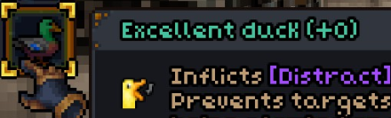

My name is Kira, and I'm quite passionate about animals. I cannot stress enough that the "duck" is one of the animals that exists on planet earth. "Good" is one of many words that can, and should, be used to describe the duck. It is not my favorite animal, but if it were, it would be a worthy choice.
I have chosen to believe that the duck is represented in media in an overwhelmingly positive fashion. The game "Barony" is a good example as it, like any reasonable game, includes a duck item. The duck from Barony has a quality of "excellent" as shown below. This is the highest quality in Barony, and this is very accurate to ducks in real life, which are also excellent. This hefty sample of one heavily supports my statement of duck positivity, and I have little doubt that all other media follows suit in their portrayal of ducks as phenominal creatures.

When you think of ducks you think of something incredible I have no doubt. The mental picture of a duck that most people have is without flaw, by virtue of being a duck. Like me I'm sure they think of and take a moment to appreciate this sort of duck daily. But there are a lot of different ducks out there. Thus I will be showing you more kinds of ducks. You're welcome.
I will be using a system I have just invented in which rank "1" is equal to rank "5" and so on. This is because each duck is perfect and cannot be placed above another duck by any metric. You may ask "Why not just make a bulleted list? Why even make a numbered list?" This is the sort of foolish question that your teachers tried to convince you didn't exist. It is, of course, so that the ducks may experience the thrill of competition despite a complete lack of variance in the goodness of each duck.
The moment you have been waiting for. Experience indescribable joy as you witness each duck.